#1
index__ar__390.png
Cause: Ad-carousel media masked to dark placeholders + live “أحدث” pulse frame; brand/CTA/nav/prices identical (eye-checked).
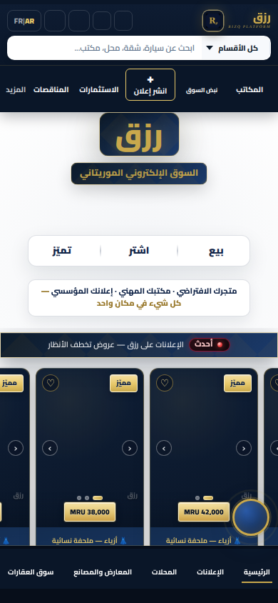
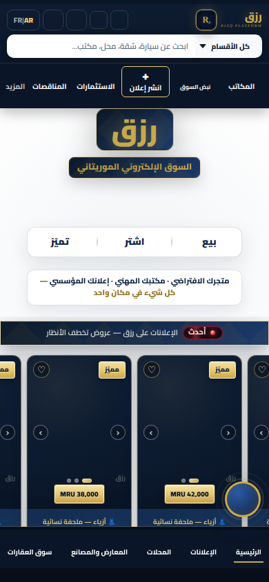
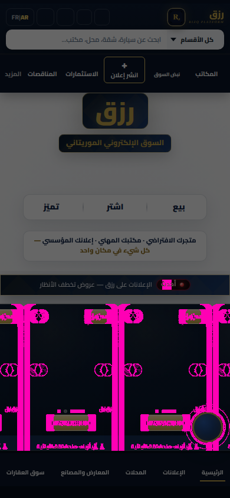
Fair compare: OLD main/SQLite :3001 vs NEW Postgres :3000, same graduation fixture, animations disabled, dynamic media masked. Landing/index listed first. Generated 2026-10-28T04:02:36.936Z.
Eye verdict (landing/index): structure, brand, CTAs, nav, and ad prices match. Magenta concentrates on ad-carousel media slots and the live pulse — not a layout redesign.
Retake 2026-10-28 (pulse + office): market_pulse AR/FR now 0% with correct language on both servers; office AR hero 0.06% after networkidle+2s with scroll locked (scales photo present). Prior pulse lang flip was harness contamination, not API/default-lang.
Cause: Ad-carousel media masked to dark placeholders + live “أحدث” pulse frame; brand/CTA/nav/prices identical (eye-checked).



Cause: Same hero + nav; pixel noise on featured-ad image slots (placeholders) and live-dot; structure unchanged (eye-checked).
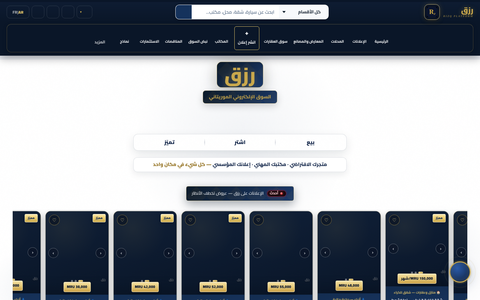
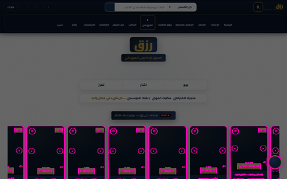
Cause: French landing: carousel media placeholders and anti-alias; layout/CTA/brand match.
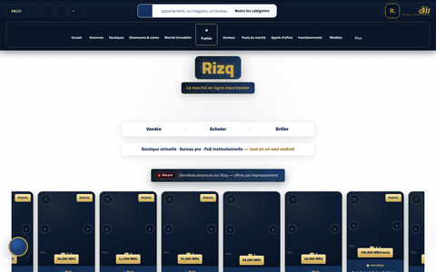
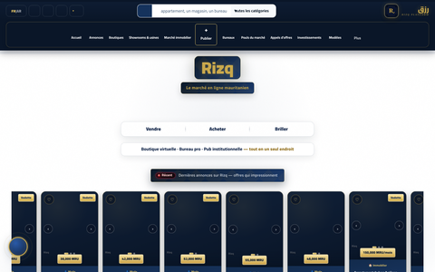
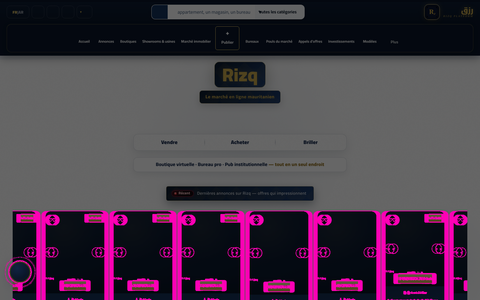
Cause: French mobile landing: same as AR — media/carousel noise only.
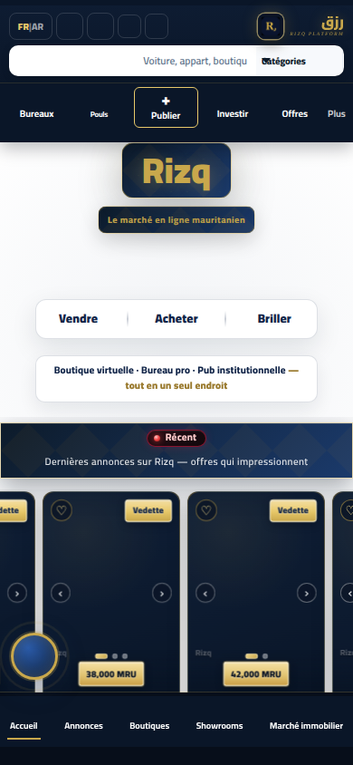
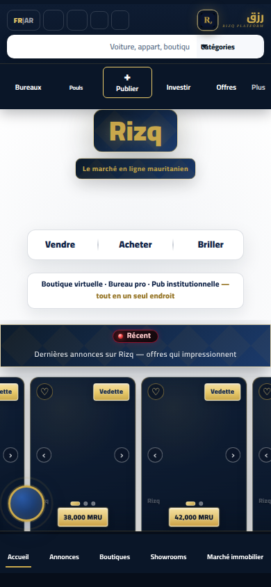
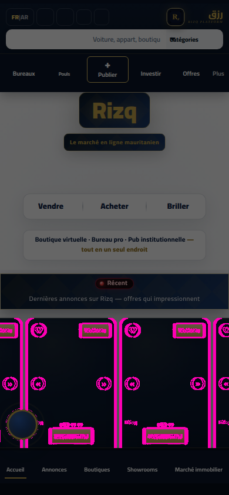
Cause: Same page as index route; carousel media + pulse animation frames; no layout regression (eye-checked).
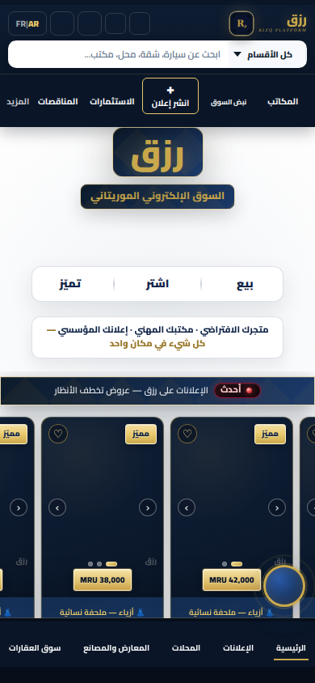
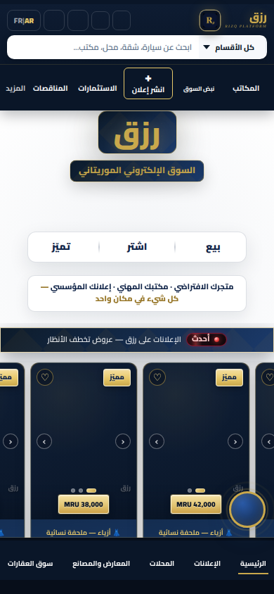
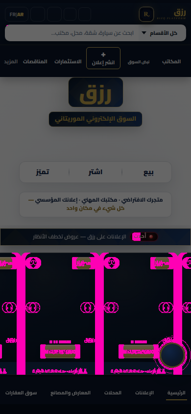
Cause: Desktop landing: featured-ad image slots differ in load state; chrome identical.
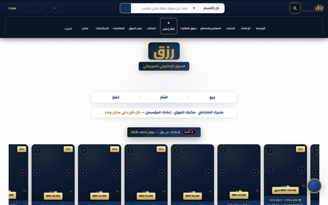
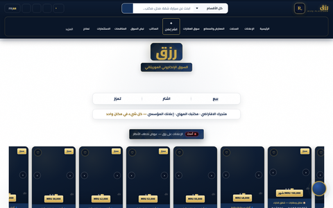
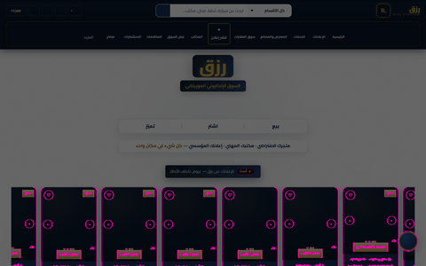
Cause: FR desktop landing: media placeholder / subpixel noise on ad cards.
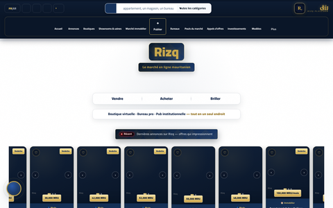
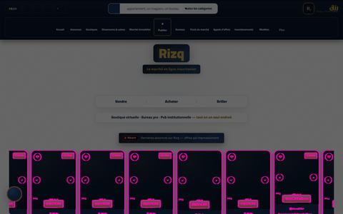
Cause: FR mobile landing: carousel media timing noise.
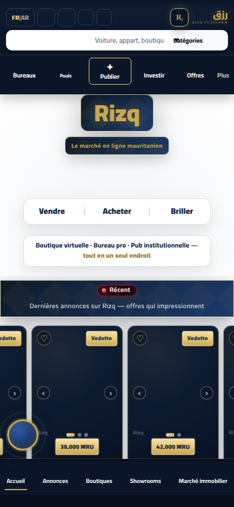
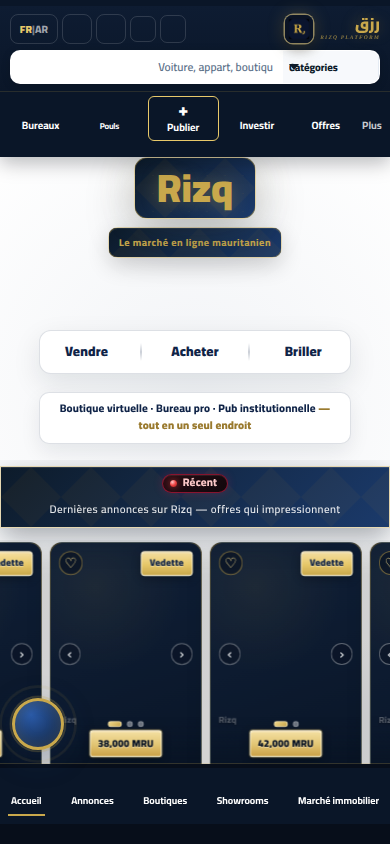
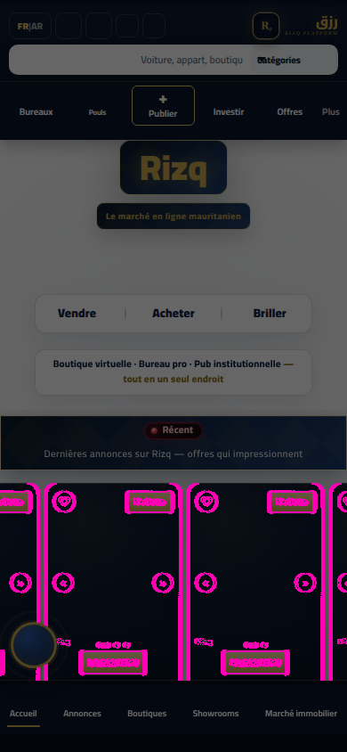
Cause: Prior “missing scales / hero shift” was auto-scrollIntoView(service-desk) + previous harness img{opacity:0} mask — not a Postgres layout bug. Retake after networkidle+2s with scroll locked at hero: 0.0623%.
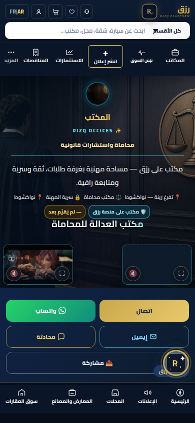
Cause: Same office page FR: video/hero media frame variance, not structure.
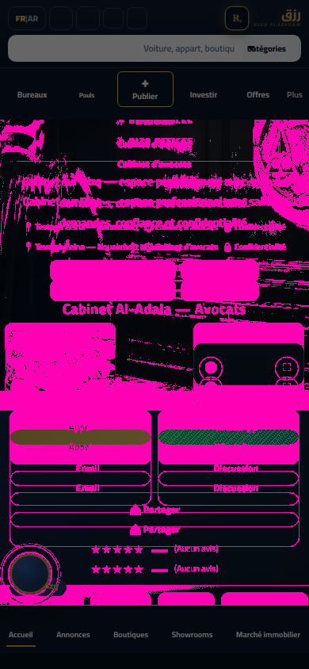
Cause: Prior report contamination was screenshot-harness language seeding (shared page / post-paint localStorage). Product reads rizq_lang via RizqI18n; AR↔FR works on both servers after clean context. Retake: 0%.
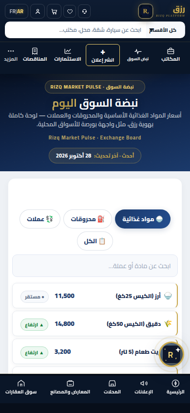
Cause: Prior report contamination was screenshot-harness language seeding (shared page / post-paint localStorage). Product reads rizq_lang via RizqI18n; AR↔FR works on both servers after clean context. Retake: 0%.
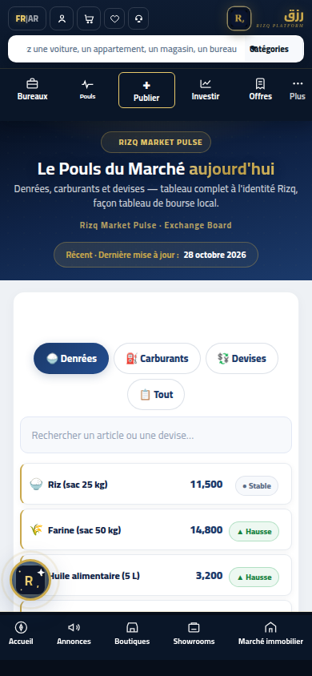
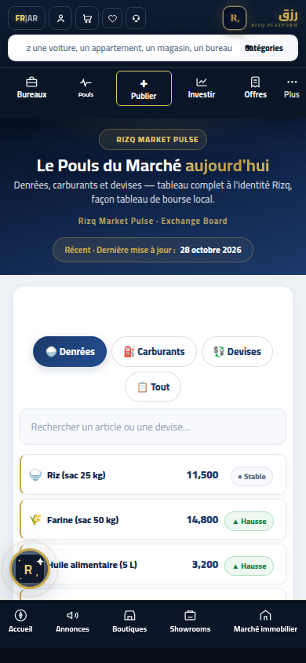
Cause: Showroom directory card images/load state.
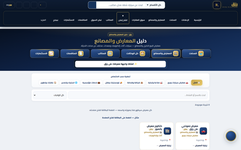

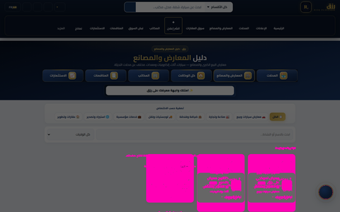
Cause: Directory card thumbnails lazy-load; fixture account list matched.
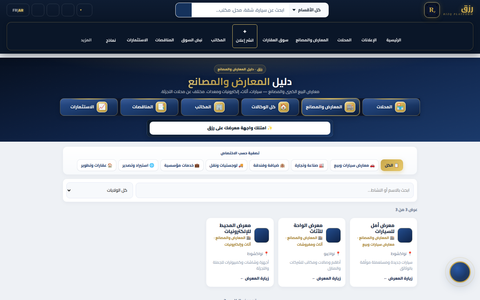
Cause: FR showroom directory: thumbnail media timing.
Cause: FR directory: thumbnail media timing.
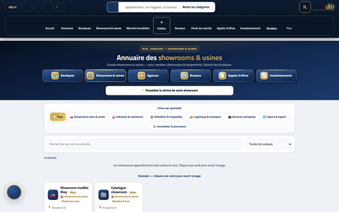
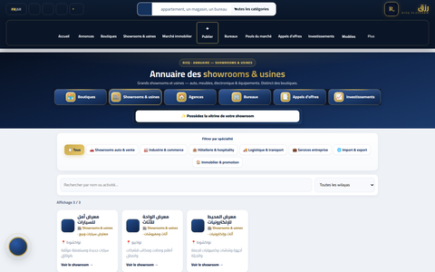
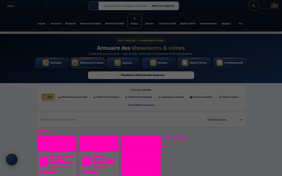
Cause: Search results ad-card image placeholders / anti-alias; ads JSON matched.
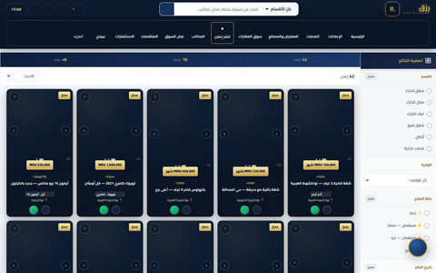
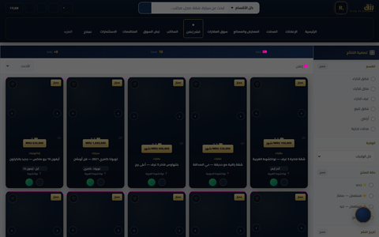
Cause: FR search: ad-card media noise.

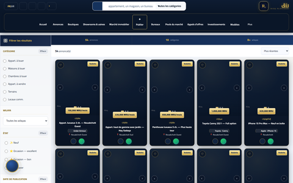

Cause: Listing detail media/gallery frame; not a structural layout change.

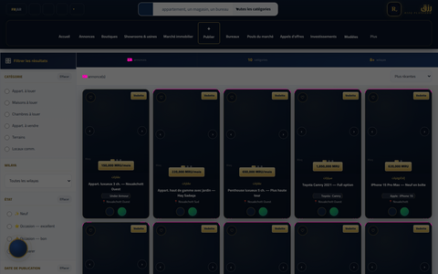
Cause: Minor product-grid image placeholder / subpixel noise (<1%).
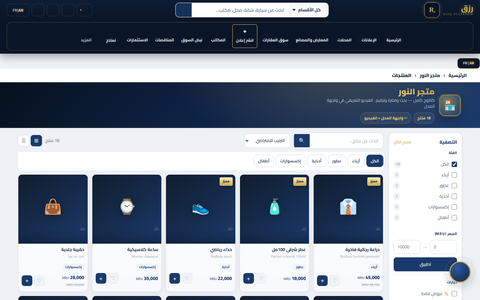
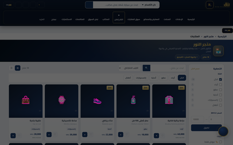